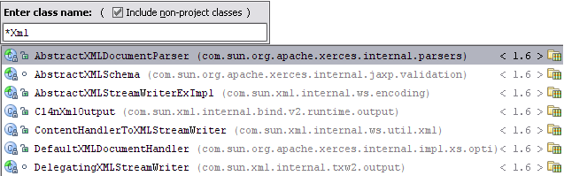

| For the pattern search in the Go to Class,
Go to Symbol and
Go to File popups,
you can use * and space symbols. * stands for any symbol. Space at the end means the end of a pattern, and the preceding string will be considered not just a prefix but a whole pattern. The list of the suggested names will be reduced accordingly.  |